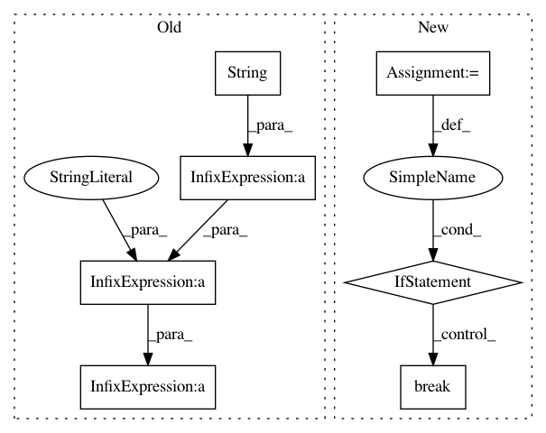

2733bef356c53286d475a67476d88d4840923830,code/deep/finetune_AlexNet_ResNet/finetune_office31.py,,finetune,#Any#Any#Any#,87
Before Change
if phase == "tar" and epoch_acc > best_acc:
best_acc = epoch_acc
print()
fname = "finetune_result" + model_name + \
str(LEARNING_RATE) + str(args.source) + \
"-" + str(args.target) + ".csv"
np.savetxt(fname, np.asarray(a=acc_hist, dtype=float), delimiter=",",
fmt="%.4f")
time_pass = time.time() - since
print("Training complete in {:.0f}m {:.0f}s".format(
After Change
criterion = nn.CrossEntropyLoss()
stop = 0
for epoch in range(1, args.n_epoch + 1):
stop += 1
// You can uncomment this line for scheduling learning rate
// lr_schedule(optimizer, epoch)
for phase in ["src", "val", "tar"]:
if phase == "src":
model.train()
else:
model.eval()
total_loss, correct = 0, 0
for inputs, labels in dataloaders[phase]:
inputs, labels = inputs.to(DEVICE), labels.to(DEVICE)
optimizer.zero_grad()
with torch.set_grad_enabled(phase == "src"):
outputs = model(inputs)
loss = criterion(outputs, labels)
preds = torch.max(outputs, 1)[1]
if phase == "src":
loss.backward()
optimizer.step()
total_loss += loss.item() * inputs.size(0)
correct += torch.sum(preds == labels.data)
epoch_loss = total_loss / len(dataloaders[phase].dataset)
epoch_acc = correct.double() / len(dataloaders[phase].dataset)
print("Epoch: [{:02d}/{:02d}]---{}, loss: {:.6f}, acc: {:.4f}".format(epoch, args.n_epoch, phase, epoch_loss,
epoch_acc))
if phase == "val" and epoch_acc > best_acc:
stop = 0
best_acc = epoch_acc
torch.save(model.state_dict(), "model.pkl")
if stop >= args.early_stop:
break
print()
model.load_state_dict(torch.load("model.pkl"))
acc_test = test(model, dataloaders["tar"])
time_pass = time.time() - since
In pattern: SUPERPATTERN
Frequency: 3
Non-data size: 7
Instances
Project Name: jindongwang/transferlearning
Commit Name: 2733bef356c53286d475a67476d88d4840923830
Time: 2020-09-30
Author: jindongwang@outlook.com
File Name: code/deep/finetune_AlexNet_ResNet/finetune_office31.py
Class Name:
Method Name: finetune
Project Name: PaddlePaddle/edl
Commit Name: 667d856a2fc27732d745cd7d926e9739ad12995c
Time: 2019-09-28
Author: wangjiawei04@baidu.com
File Name: example/ctr/ctr/train.py
Class Name:
Method Name: train
Project Name: michaelhush/M-LOOP
Commit Name: 6e5cf676b113af8d70e34224f23bc8eace618856
Time: 2017-05-02
Author: harry.slatyer@gmail.com
File Name: mloop/nnlearner.py
Class Name: SingleNeuralNet
Method Name: fit